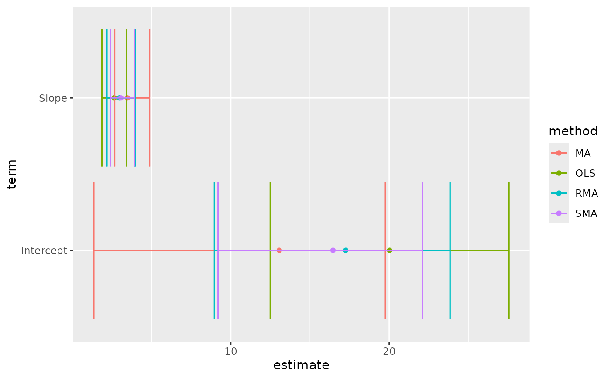

Tidy summarizes information about the components of a model. A model component might be a single term in a regression, a single hypothesis, a cluster, or a class. Exactly what tidy considers to be a model component varies across models but is usually self-evident. If a model has several distinct types of components, you will need to specify which components to return.
Usage
# S3 method for lmodel2
tidy(x, ...)Arguments
- x
A
lmodel2object returned bylmodel2::lmodel2().- ...
Additional arguments. Not used. Needed to match generic signature only. Cautionary note: Misspelled arguments will be absorbed in
..., where they will be ignored. If the misspelled argument has a default value, the default value will be used. For example, if you passconf.lvel = 0.9, all computation will proceed usingconf.level = 0.95. Two exceptions here are:
Details
There are always only two terms in an lmodel2: "Intercept"
and "Slope". These are computed by four methods: OLS
(ordinary least squares), MA (major axis), SMA (standard major
axis), and RMA (ranged major axis).
The returned p-value is one-tailed and calculated via a permutation test.
A permutational test is used because distributional assumptions may not
be valid. More information can be found in
vignette("mod2user", package = "lmodel2").
See also
Other lmodel2 tidiers:
glance.lmodel2()
Value
A tibble::tibble() with columns:
- conf.high
Upper bound on the confidence interval for the estimate.
- conf.low
Lower bound on the confidence interval for the estimate.
- estimate
The estimated value of the regression term.
- p.value
The two-sided p-value associated with the observed statistic.
- term
The name of the regression term.
- method
Either OLS/MA/SMA/RMA
Examples
# load libraries for models and data
library(lmodel2)
data(mod2ex2)
Ex2.res <- lmodel2(Prey ~ Predators, data = mod2ex2, "relative", "relative", 99)
Ex2.res
#>
#> Model II regression
#>
#> Call: lmodel2(formula = Prey ~ Predators, data = mod2ex2, range.y
#> = "relative", range.x = "relative", nperm = 99)
#>
#> n = 20 r = 0.8600787 r-square = 0.7397354
#> Parametric P-values: 2-tailed = 1.161748e-06 1-tailed = 5.808741e-07
#> Angle between the two OLS regression lines = 5.106227 degrees
#>
#> Permutation tests of OLS, MA, RMA slopes: 1-tailed, tail corresponding to sign
#> A permutation test of r is equivalent to a permutation test of the OLS slope
#> P-perm for SMA = NA because the SMA slope cannot be tested
#>
#> Regression results
#> Method Intercept Slope Angle (degrees) P-perm (1-tailed)
#> 1 OLS 20.02675 2.631527 69.19283 0.01
#> 2 MA 13.05968 3.465907 73.90584 0.01
#> 3 SMA 16.45205 3.059635 71.90073 NA
#> 4 RMA 17.25651 2.963292 71.35239 0.01
#>
#> Confidence intervals
#> Method 2.5%-Intercept 97.5%-Intercept 2.5%-Slope 97.5%-Slope
#> 1 OLS 12.490993 27.56251 1.858578 3.404476
#> 2 MA 1.347422 19.76310 2.663101 4.868572
#> 3 SMA 9.195287 22.10353 2.382810 3.928708
#> 4 RMA 8.962997 23.84493 2.174260 3.956527
#>
#> Eigenvalues: 269.8212 6.418234
#>
#> H statistic used for computing C.I. of MA: 0.006120651
#>
# summarize model fit with tidiers + visualization
tidy(Ex2.res)
#> # A tibble: 8 × 6
#> method term estimate conf.low conf.high p.value
#> <chr> <chr> <dbl> <dbl> <dbl> <dbl>
#> 1 MA Intercept 13.1 1.35 19.8 0.01
#> 2 MA Slope 3.47 2.66 4.87 0.01
#> 3 OLS Intercept 20.0 12.5 27.6 0.01
#> 4 OLS Slope 2.63 1.86 3.40 0.01
#> 5 RMA Intercept 17.3 8.96 23.8 0.01
#> 6 RMA Slope 2.96 2.17 3.96 0.01
#> 7 SMA Intercept 16.5 9.20 22.1 NA
#> 8 SMA Slope 3.06 2.38 3.93 NA
glance(Ex2.res)
#> # A tibble: 1 × 5
#> r.squared theta p.value H nobs
#> <dbl> <dbl> <dbl> <dbl> <int>
#> 1 0.740 5.11 0.00000116 0.00612 20
# this allows coefficient plots with ggplot2
library(ggplot2)
ggplot(tidy(Ex2.res), aes(estimate, term, color = method)) +
geom_point() +
geom_errorbarh(aes(xmin = conf.low, xmax = conf.high)) +
geom_errorbarh(aes(xmin = conf.low, xmax = conf.high))
